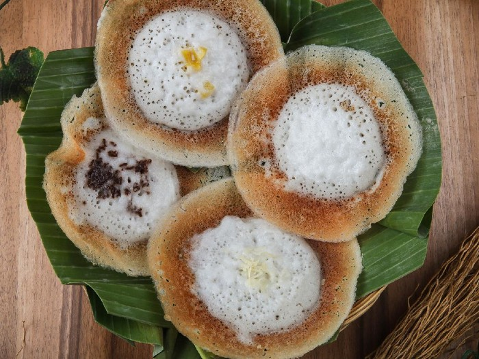

3.SERABI

Serabi Solo adalah makanan khas Solo yang berbentuk bulat seperti piring dengan sedikit kerak di sekelilingnya. Tekstur Serabi Solo kenyal namun tetap lembut, dan memiliki rasa yang sangat legit.
Resep Serabi
Bahan
- 200 gram tepung beras
- ½ sdt ragi instan
- 2 lbr daun pandan
- 50 gram gula pasir
- Sejumput garam
- 1 butir telur
- 500 ml santan kelapa
Topping:
- 100 gram nangka (potong)
- Meises coklat
Cara Pembuatannya
1. Tuangkan santan kelapa, garam, dan daun pandan ke dalam panci. Masak hingga mendidih sambil diaduk.
2. Dalam wadah lain, campurkan tepung beras, ragi, dan gula.
3. Campurkan santan dan adonan tepung, aduk hingga rata.
4. Kocok telur hingga berbusa, dan tuang ke dalam donan santan serta tepung.
5. Panaskan wajan tanah liat, bisa menggunakan arang atau kompor.
6. Tuangkan 1 sendok sayur adonan ke dalam wajan dambil ditekan agar ada adonan yang berkerak.
7. Taburi dengan topping sesuai selera.
8. Tutup wajan hingga permukaan serabi agak membeku.
9. Jika sudah matang, angkat dan lipat dengan daun pisang.
10. Lakukan pada adonan yang masih tersisa.